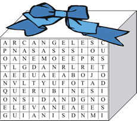

En el regalo como en sopa de letras, encontrarás el mensaje, pero tendrás que imprimirlo.
SON ANGELES, MENSAJEROS, ARCÁNGELES, SERAFINES, QUERUBINES DAN VIRTUDES, SON CUSTODIOS NOBLES Y BUENOS, PROTEGEN, GUIAN, APOYAN, VELAN, AYUDAN, ELEVAN, TE DAN BONDAD Y AMAN. DI SI, SI, SI Y NO.
alabras que encontrarás, horizontal, vertical, arriba y abajo.
